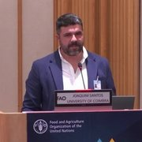

Joel P. Arrais
Deep Learning | Drug Discovery | Computational Biology
Associate Professor at the Department of Informatics Engineering, University of Coimbra, and Researcher at CISUC. I lead research efforts in applying AI to solve complex biological challenges, specifically in molecular generation and genomic analysis.
Highlights
Publication in Nature Communications!
AI model for Enhancing kinase-inhibitor activity and selectivity. Joint work with Liu Huanxiang from MPU
In the news!
Our work was promoted by the main Portuguese media, such as Jornal Público, Jornal Observador and Jornal Expresso.
Three funded research projects!
CHAFT, VIBES and IA4FARMA projects funded!
Research interests
Drug–target prediction
Deep Learning models for prediction of Protein-Drug interactions.
Drug Generative models
Language models for de novo generation of SMILES of molecules with desired properties.
Genetic variants analysis
Analysis of genetic variants to find those associated with a specific trait or disease.
Pharmacogenomics
Computational models of how genetic profiles influence the effect of drugs.
Featured Publications


Complete and updated list of Publications
Google ScholarTeam
Tiago Pereira
Collaborator
Researcher at CNC, UC

Yousef Khan
PhD student
AI-Driven Knowledge Graphs: Automating Adaptive Rule Discovery for Intelligent Systems

Sofia Monteiro
PhD student
Classifying Functional Impairments in Foot Clinic Patients using Plantar Pressure Distributions

Hayder Fadhil Ali
PhD student
Machine Learning Models for Predicting Biodegradability in Bio-Based Polyesters


Joaquim Santos
PhD student
Knowledge Graph for improved gene disease association
Paulo Correia
PhD student
Interpretable SE(3)-Equivariant Models for Structure-Based Drug Discovery

Edgar Vicente
PhD student
Multi-Objective Alignment of Generative AI for the Design of Broad-Spectrum Antimicrobial Peptides
Former PhD Students
- Edgar Coelho, Lead Data Scientist at MarketerHire
- Fernanda Correia, Adjunct Professor at ISEP, IPC
- António Cruz, Researcher at CISUC, UC
- Nelson Monteiro, Data Scientist at Orbis Medicines
- Tiago Pereira, Researcher at CNC, UC
- Daniel Martins, Researcher at MIA, UC
- Luis Torres, Artificial Intelligence Scientist at Sanofi
- Anuschka da Silva Spínola, Researcher at CNC, UC
- Fabiano Papaiz, Professor at IFRN, Brazil
- Yanan Tian, Researcher
- Jianxiu Cai, Researcher